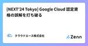
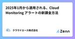
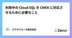
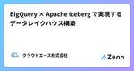
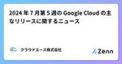
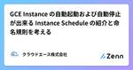
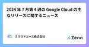
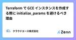
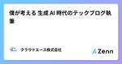

クラウドエース株式会社さんのフィード
https://zenn.dev/cloud_ace
クラウドエース株式会社 公式技術ブログです
フィード

[NEXT'24 Tokyo] Google Cloud 認定資格の誤解を打ち破る 2
2
クラウドエース株式会社さんのフィード
はじめに【Google Cloud NEXT'24 Tokyo】こんにちは、Google Cloud 認定トレーナーで\textcolor{red}{赤髪}がトレードマークの Shanks です。皆さまは 2024/08/01〜2024/08/02 にパシフィコ横浜で開催された Google Cloud Next Tokyo ’24 へ参加されましたでしょうか？筆者は Authorized Training Partner（以下、ATP）として、Google Cloud 公式ブース「ラーニング＆認定資格」に立ちお手伝いをしてまいりました。【当日の様子】ATP とはA...
1日前

2025年1月から適用される、Cloud Monitoring アラートの新課金方法 1
クラウドエース株式会社さんのフィード
みなさんこんにちは。クラウドエース バックエンドエンジニアリング部所属の唐津です。Cloud Monitoringにおけるアラートの新課金方法が公開されたので、その内容を共有いたします。https://cloud.google.com/stackdriver/pricing#pricing-alerting 要約2025年1月7日以降、Cloud Monitoring のアラートポリシーに対する課金が開始されるアラートポリシーにおいて、「条件数に応じた課金」と、「取得時系列データ件数に応じた課金」が導入されるポリシーを統合する、集計レベルを最適化するなどの対策により課金額...
3日前

利用中の Cloud SQL を CMEK に対応させるために必要なこと 1
クラウドエース株式会社さんのフィード
はじめにこんにちは！SRE 部門所属の小林由暁です！今回は、利用中の Cloud SQL インスタンスの暗号鍵の変更方法について手順ベースで解説します。変更時の留意事項含めての解説となるため、ご検討されている方々の参考になれば幸いです。 この記事が役立つ人Cloud SQL の暗号鍵に デフォルトの Google 暗号鍵 を利用中だが、 CMEK の利用に変更したい方Cloud SQL で CMEK を利用したいが、具体的な手順がイメージできない方 現在利用中の暗号化方法についての確認方法まずは、利用中の Cloud SQL インスタンスで利用中の暗号鍵につい...
3日前
Spanner エディションによる Spanner 料金モデル変更について紹介
クラウドエース株式会社さんのフィード
こんにちは、クラウドエース株式会社 SRE 部の阿部です。この記事では Google Cloud Next Tokyo '24 で発表された Spanner エディションにおける料金モデル変更について紹介します。 Spanner の変更点概要 (Google Cloud Next Tokyo'24 発表から抜粋)2024 年 8 月 2 日の基調講演で、Spanner の新機能について発表がありました。発表内容は以下の通りです。Spanner Graph (参考:公式ブログ)ベクトル検索(Vector search)全文検索(Full-text search)Spa...
3日前

BigQuery × Apache Iceberg で実現するデータレイクハウス構築
クラウドエース株式会社さんのフィード
はじめにこんにちは、クラウドエース データソリューション部の松本です。普段はデータ基盤や機械学習システムの構築を行なっており、Google Cloud 認定トレーナーとしてトレーニング提供もしています。クラウドエース データソリューション部 についてクラウドエースのITエンジニアリングを担う システム開発統括部 の中で、特にデータ基盤構築・分析基盤構築からデータ分析までを含む一貫したデータ課題の解決を専門とするのが データソリューション部 です。弊社では、新たに仲間に加わってくださる方を募集しています。もし、ご興味があれば エントリー をお待ちしております！今回は、Bi...
7日前

2024 年 7 月第 5 週の Google Cloud の主なリリースに関するニュース
クラウドエース株式会社さんのフィード
クラウドエースの山本です。7 月 29 日 〜 7 月 31 日の期間にアナウンスされた Google Cloud の主なリリースに関してご紹介します。!該当日の全ての情報を掲載しているものではございません。すべてのリリースノートを確認されたい方は、当該ページからご確認ください。 Google Kubernetes Engine （GKE）Backup for GKE で確約利用割引が提供されるようになりました ( 公式ドキュメント )バックアップ管理費用に対して、以下の内容で割引が適用されます1 年間の契約で 20％ の割引3 年間の契約で 45％ の割引...
8日前
BigQueryのContinuous Queriesがプレビューになりました
クラウドエース株式会社さんのフィード
はじめにこんにちは。クラウドエース データソリューション部所属の橘です。データソリューション部では、Google Cloud が提供しているデータ領域のプロダクトについて、新規リリースをキャッチアップするための調査報告会を毎週実施しています。新規リリースの中でも、特に重要と考えるリリースを記事としてまとめ、本ページのように公開しています。今回紹介するのは、2024/7/22 に preview となった「BigQuery の Continuous Queries 」についてです。 要約今回 preview リリースされた Continuous Queries は以下のよ...
8日前
Looker の datagroup 活用ガイド: キャッシュ更新とパフォーマンス最適化のベストプラクティス
クラウドエース株式会社さんのフィード
はじめにこんにちは、クラウドエース データソリューション部 の尾杉です。最近、Looker の datagroup のトリガーに関する挙動が分からなかったので、調査しながらその知見を整理し、記事としてまとめることにしました。datagroup は、Explore のキャッシュポリシーの定義や、永続化派生テーブル（PDT）の再構築を行うためのトリガー設定を可能にします。異なる Explore や PDT に対して複数のポリシーを適用するには、それぞれのポリシーに対して個別の datagroup パラメータを設定する必要があります。本記事では、Looker の基本的な使い方を把握...
9日前

GCE Instance の自動起動および自動停止が出来る Instance Schedule の紹介と命名規則を考える
クラウドエース株式会社さんのフィード
こんにちは。 ワタシハ ケンケツ チョットデキル でお馴染みの五十嵐です( 詳しくは GitHub を参照してください )本日は Compute Engine (以下、GCE) の一機能を紹介します皆さんの Google Cloud の設計の参考にして下さい :) Instance Schedule とはInstance Schedule (以下、インスタンススケジュール) を使用すると、GCE Instance の起動と停止を自動化する設定ができますhttps://cloud.google.com/compute/docs/instances/schedule-insta...
9日前

2024 年 7 月第 4 週の Google Cloud の主なリリースに関するニュース
クラウドエース株式会社さんのフィード
クラウドエースの山本です。7 月 22 日 〜 7 月 26 日の期間にアナウンスされた Google Cloud の主なリリースに関してご紹介します。!該当日の全ての情報を掲載しているものではございません。すべてのリリースノートを確認されたい方は、当該ページからご確認ください。 AlloyDB for PostgreSQL以下の機能が一般公開 (以下、GA) されました。AlloyDB インスタンスのパブリック IP のサポートカスタム制約を備えた組織ポリシーの作成 BigQueryBigQuery テーブルの最近書き込まれた行を修正する際、Stor...
11日前

Terraform で GCE インスタンスを作成する際に initialize_params を避けるべき理由 1
クラウドエース株式会社さんのフィード
こんにちは、クラウドエース SRE 部の阿部です。この記事では、Terraform で Google Compute Engine インスタンス(以降、GCE インスタンス)を作成する際のベストプラクティスについて紹介します。特に、initialize_params の使用を避ける理由とその代替方法について説明します。先日、弊社の海外メンバーと Terraform の書き方について議論になった際に、 GCE インスタンスのパラメータを変更すると強制再作成となってしまい、メンテナンスのときに困っていると相談を受けて、この記事を書くことを思いつきました。 結論GCE インスタンスの...
11日前

僕が考える 生成 AI 時代のテックブログ執筆 1
クラウドエース株式会社さんのフィード
こんにちは、クラウドエース フロントエンド・UI/UX 部の 小堀内 です。以前、「僕が考える テックブログを書く意義 と 書き方のすゝめ」という記事を投稿した際に、嬉しいことにたくさんのいいねをいただきました。そこで、上長から「今年の新卒向けにブログ書き方講座を実施するから、その一部として、テックブログに対する熱い気持ちを述べてほしい」と言われました。僕自身、テックブログを書くことが好きなので、以前の記事をベースに新卒の方向けにお話しするのも悪くはないと思ったのですが、せっかくこのような機会をいただいているので、僕含めその講座関係者が有意義な時間を過ごせるようにしたいと思いまし...
12日前

Google Cloud セキュリティ ソリューションまとめ
クラウドエース株式会社さんのフィード
はじめにこんにちは、クラウドエース SRE 部に所属している\textcolor{red}{赤髪}がトレードマークの Shanks です。7月上旬に Google Cloud 主催のパートナー向けセキュリティソリューション紹介セミナーに参加してきました。クラウドエースからは8名が参加し、最新の動向やナレッジ収集をすることができました。その際に紹介いただいた各種ソリューションについてまとめた記事となっています。本記事がこれから Google Cloud でセキュリティ対策を講じる方の参考になれば幸いです。 Google が掲げるセキュリティ戦略 Google のセキュ...
16日前
Google Calendar API を用いた日報作成の半自動化
クラウドエース株式会社さんのフィード
はじめにこんにちは。クラウドエース株式会社 データソリューション部の髙木です。私は新卒ですが、入社前から業務の自動化をしたいという思いがありました。本記事では、私が初めて業務の(半)自動化をしたことについて執筆します。 日報作成を半自動化しようと思ったワケ退勤前の必須業務である日報。早く退勤したいのに日報がそれを阻害してきます。特に「作業詳細」と「作業予定」の欄を埋めるのが大変です。(「課題」や「所感」は多少なりとも書く気力はあります。)Google Calendar の予定のタイトルをそのままコピー＆ペーストできればいいのに。もちろん、各予定についてGo...
16日前
2024 年 7 月第 3 週の Google Cloud の主なリリースに関するニュース
クラウドエース株式会社さんのフィード
クラウドエースの山本です。7 月 15 日 〜 7 月 19 日の期間にアナウンスされた Google Cloud の主なリリースに関してご紹介します。!該当日の全ての情報を掲載しているものではございません。すべてのリリースノートを確認されたい方は、当該ページからご確認ください。 Cloud ComposerCloud Composer 1 環境の新規作成ができなくなりました Cloud Data FusionCloud Storage Copy/Move プラグイン バージョン 0.23.2 が、Cloud Data Fusion バージョン 6.10.0 以...
17日前
Cloud Functions:CI/CDパイプラインの構築手順
クラウドエース株式会社さんのフィード
はじめにこんにちは、クラウドエースの岸本です。今回は、Google Cloud 上で CI/CD パイプラインを構築し Cloud Functions を自動デプロイする手順を紹介します。初心者の方にもわかりやすく解説していますので是非参考にしてみてください。!構築手順でコマンドラインを使用します。コマンドラインのオプションが気になる方は、以下のリンクを参照してください。 構成図構成図は以下の通りです。CI/CD パイプラインを構成する主要なサービスは以下の通りです。Cloud FunctionsCloud Functions は、Google Cl...
18日前
Firebase Firestore Database のマスタデータを Terraform で一元管理する
クラウドエース株式会社さんのフィード
こんにちは、クラウドエース フロントエンド・UI/UX 部の 小堀内 です。Firebase プロジェクトを複数環境（開発、本番など）で運用する際、Firestore Database 上でのマスタデータの管理は手間がかかります。本記事では、Terraform を使用して Firestore Database のマスタデータを一元管理する方法を紹介します。 やること／やらないことやること複数環境（開発、本番など）の Firebase Firestore のマスタデータを Terraform コードにて一元管理するやらないことFirestore データモデルの説...
18日前
Firebase へのデプロイを GitHub Actions & Workload Identity によって自動化する
クラウドエース株式会社さんのフィード
こんにちは、クラウドエース フロントエンド・UI/UX 部の 小堀内 です。今回は、私が個人開発においてよく実施する、Firebase デプロイ自動化の方法についてご紹介します。 はじめにFirebase には複数のサービスが存在しています。例えば、Cloud Firestore, Cloud Storage for Firebase, Cloud Functions for Firebase などがありますよね。Firebase は mBaaS のプロダクトであり、基本的には Firebase コンソール内でほとんどの操作が可能ですが、実際のプロジェクト開発においては、コ...
19日前
Firebase の API キーは公開しても大丈夫？
クラウドエース株式会社さんのフィード
こんにちは、クラウドエース フロントエンド・UI/UX 部の 小堀内 です。Firebase を使用する開発者の間で、API キーの取り扱いについてよく議論されています。「API キーは絶対に公開してはいけない」という考えが一般的ですが、Firebase の場合は少し事情が異なります。この記事では、Firebase の API キーの特性と適切な管理方法について解説します。 結論Firebase の API キーは公開しても基本的に問題ないただし、Firebase の API キーは公開される前提で設計されているため Firebase プロジェクト側での対策が必要F...
19日前
Google Cloud で簡単に分散処理 〜Dataflow job builder のご紹介〜
クラウドエース株式会社さんのフィード
はじめにこんにちは、クラウドエース データソリューション部の伊藤です。普段は、データ基盤や機械学習基盤の構築だったり、Google Cloud 認定トレーナーとしてトレーニングを提供しております。クラウドエース データソリューション部 についてクラウドエースのITエンジニアリングを担う システム開発統括部 の中で、特にデータ基盤構築・分析基盤構築からデータ分析までを含む一貫したデータ課題の解決を専門とするのが データソリューション部 です。弊社では、新たに仲間に加わってくださる方を募集しています。もし、ご興味があれば エントリー をお待ちしております！今回は、Dataf...
23日前